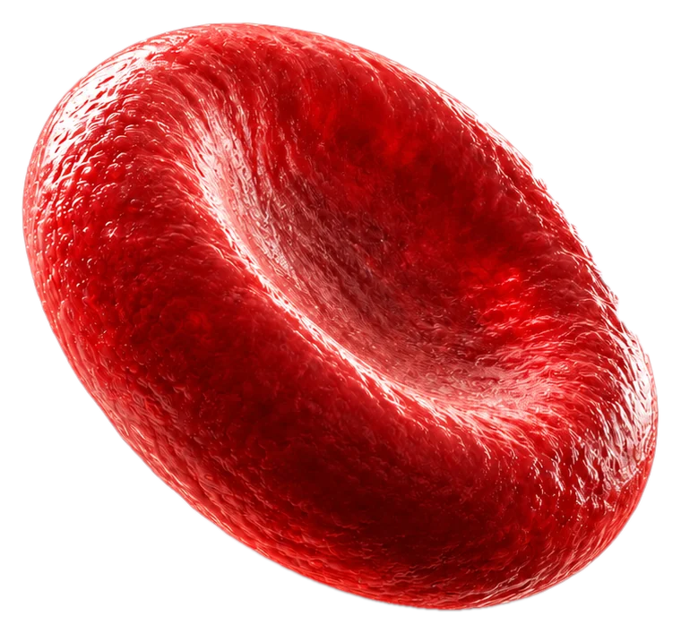

Iron Infusion
Iron deficiency is one of the most common nutritional deficiencies in the UK. Research suggests that close to 50% of women have iron levels low enough to confirm iron deficiency.1 When iron stores run low you may notice tiredness, breathlessness, hair shedding, hair thinning, brain fog, poor concentration, heart palpitations, brittle nails, restless legs or feeling cold. Many people experience these symptoms long before they become anaemic – have low red cells/haemoglobin. An iron infusion is a way to fully restore your iron levels, often in a single visit within an hour.

Iron deficiency is one of the most common nutritional deficiencies in the UK. Research suggests that close to 50% of women have ferritin levels low enough to confirm iron deficiency.1 It is less common in men, where the most common causes are bowel related. Iron is needed to make haemoglobin, the protein in red blood cells that carries oxygen around the body. When stores run low you may notice tiredness, breathlessness, hair shedding, hair thinning, brain fog, poor concentration, heart palpitations, brittle nails, restless legs or feeling cold. Many people experience these symptoms long before they become anaemic – have low red cells/haemoglobin. An iron infusion is a way to fully restore your iron levels, often in a single visit within an hour.
Why an Iron Infusion
Iron tablets are usually the first step but are notorious for causing gastrointestinal side effects such as cramping pain, nausea and constipation. An infusion is often the better option when tablets cause side effects, when iron is not being absorbed properly, when levels have not improved despite supplements or when iron stores need to be restored quickly. An iron infusion replenishes your iron stores directly through the bloodstream. It bypasses the gut, avoiding the stomach upset that many people experience with iron tablets and the poor absorption that limits their effect. A full dose can usually be given in a single visit. Unlike some providers, we make sure all our iron infusions are consulted on, performed and followed up by experienced doctors.
Testing for Iron Deficiency
Every iron infusion at Blue Bird Wellness follows a consultation and a blood test to confirm it is right for you. Ideally your blood test should be from within the last 6–8 weeks. If you have recent results from the NHS or another provider, our doctors can review these for you. If not, we can arrange a test for you from £50. A complete iron assessment looks at ferritin alongside haemoglobin and other markers of iron status.
Ferritin is the protein that stores iron in the body and is the main measure of your iron stores. Many people are told that a ferritin level above 15 is acceptable. However, this threshold was designed to identify severe depletion rather than healthy iron levels. Specialists in iron deficiency often aim for considerably higher levels, particularly in women with heavy periods, those experiencing hair loss and people with inflammatory bowel disease. In these groups a ferritin of 70 or above is commonly recommended, and levels as high as 100 are considered optimal in certain cases.
Low Iron vs Anaemia
Iron deficiency and anaemia are often spoken about together, but they are not the same thing. Iron deficiency means your body's iron stores are low. Anaemia means you have too few healthy red blood cells or too little haemoglobin (the protein in red blood cells that carries oxygen). Iron deficiency is the most common cause of anaemia, but you can be iron deficient without being anaemic. If left untreated, iron deficiency can eventually lead to anaemia, although symptoms often appear long before anaemia sets in. It is also possible to be anaemic with normal iron stores due to other reasons. As part of our safety standards, your doctor will review your blood results, take a full medical history and make sure an iron infusion is safe and appropriate for you. If your results suggest another cause, we will advise you on the next steps.
The Iron We Use
We use Monofer (ferric derisomaltose), one of the most advanced iron formulations available. It allows a full replacement dose to be given in a single infusion. Many providers use Ferinject (ferric carboxymaltose) because it is less expensive. We choose Monofer so that you receive a premium grade of iron with a better side effect profile, most notably a much lower risk of low phosphate levels. Research has shown around 10 times fewer cases of low phosphate with Monofer compared with Ferinject.2 Low phosphate can cause fatigue, muscle weakness and bone pain, so choosing the right formulation matters.
What to Expect
The infusion is simple and is carried out entirely by your doctor. A small cannula is placed into a vein in your arm or hand and the iron is mixed with sterile saline. It is then given slowly through a drip, usually over around 30 to 60 minutes depending on your dose. You do not need to fast or prepare in any way beforehand. You will be observed after your infusion and most people return to their normal day straight away.
Side Effects and Safety
Iron infusions are very safe and most people experience no side effects at all. When side effects do occur they are usually mild and short-lived, such as a headache, flushing, mild dizziness, nausea or slight bruising at the cannula site.
Some people read about body aches or flu-like symptoms after an iron infusion. These can occur a day or two after treatment and usually settle on their own within a few days. Longer-lasting aches and tiredness can also be caused by a drop in phosphate levels, which is far more common with Ferinject. This is one of the main reasons we use Monofer.
Skin staining is another concern people raise. It can happen if iron leaks from the vein into the surrounding skin, leaving a brown mark that may be long-lasting. Our doctors follow a careful protocol to prevent this by checking the cannula before and throughout the infusion. Our protocol has never led to a case of skin staining.
A severe allergic reaction (anaphylaxis) is very rare, occurring in around 0.01% to 0.001% of infusions. That is between 1 in 10,000 and 1 in 100,000. Every infusion is given by an experienced doctor with emergency equipment and medication immediately available. Please let us know if you have ever had a reaction to iron or to an infusion before.
Iron Infusions in Pregnancy
Iron deficiency is common in pregnancy as the body's demand for iron rises sharply. Iron infusions can be given safely in the second and third trimesters but are never given in the first trimester. Iron tablets are usually tried first where suitable and care is coordinated with your maternity team.
What's in it
Ingredients
- Monofer (ferric derisomaltose), dose calculated according to your weight and iron levels
Ingredient guide
Monofer (Ferric Derisomaltose)
An intravenous iron formulation in which iron is tightly bound within a carbohydrate structure. This allows iron to be released steadily, so a large dose can be given in a single infusion. Once in the bloodstream the iron is taken up by the body's stores, where it replenishes ferritin and is used to produce haemoglobin.
Prices
Iron infusions start from £235. Your doctor will discuss safe dosing with you based on the medical history they take and your blood results. For someone with severe iron deficiency, a dose of around 1000mg is typically needed to fully replenish iron stores. Higher doses may be needed depending on your body weight or in cases of severe anaemia (which is separate to iron deficiency).
| Dose | Price |
|---|---|
| 100mg | £235 |
| 200mg | £275 |
| 300mg | £315 |
| 400mg | £350 |
| 500mg | £390 |
| 600mg | £455 |
| 700mg | £515 |
| 800mg | £575 |
| 900mg | £640 |
| 1000mg | £700 |
| 1100mg | £740 |
| 1200mg | £780 |
| 1300mg | £815 |
| 1400mg | £855 |
| 1500mg | £895 |
| 1600mg | £935 |
| 1700mg | £975 |
| 1800mg | £1,015 |
| 1900mg | £1,050 |
| 2000mg | £1,090 |
- 1 Association between adiposity and iron status in women of reproductive age: data from the UK National Diet and Nutrition Survey (NDNS) 2008–2019.
- 2 Wolf M, Rubin J, Achebe M, et al. Effects of iron isomaltoside vs ferric carboxymaltose on hypophosphatemia in iron-deficiency anemia: two randomized clinical trials. JAMA. 2020;323(5):432–443.
All infusions are prescribed and administered by, or under the supervision of, a registered clinician following individual clinical assessment. IV therapy is not a substitute for a balanced diet and healthy lifestyle. Individual results vary. Prices correct at time of publication and subject to change.
Back to all treatments